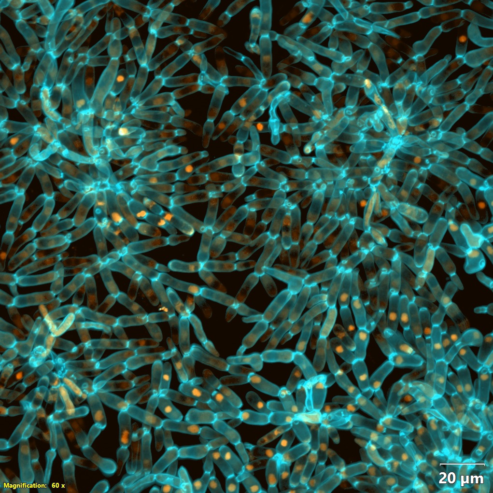

Data & Strains
Data & Strains
We are developing a model system that we hope will be used by diverse researchers around the world. Strains from the frozen archive are shared on request, with no authorship requirement. We ask only that requests not overlap with work ongoing in our lab or that of a collaborator. Fill in one form and tell us what you are trying to find out.
- Populations
- 15
- Frozen snapshots
- 3,000+
- Freeze interval
- 25 days
- Storage
- -80 °C
Archive figures maintained by the lab. 25 days is about 125 generations.
Requesting strains
How a request works
We share strains with no authorship requirement. The form allows us to identify exactly which samples to pull from the freezer, and to check that a request does not overlap with work ongoing in our lab or that of a collaborator. We can currently ship within the United States only.
What the form collects
- Recipient information, for shipping and documentation.
- The strains you want: population, timepoint and treatment.
- A short research plan, so we can send the protocols that go with those strains and flag overlap with work already under way elsewhere.
- Shipping preference: overnight on dry ice, or agar stabs.
Naming what you want
Populations run PA1–5 (anaerobic), PM1–5 (mixotrophic) and PO1–5 (obligately aerobic). Timepoints are written the way the papers write them: PA5 t600 is anaerobic population 5 at transfer 600. Because the cycle is daily, transfer number and day number are the same coordinate. If you know the phenotype you want but not the timepoint, say so on the form and we will work it out.
Strains are typically shipped within two weeks of approval.
Download the request form (.docx)
Where to send it
Send the completed form to Dung T. Lac, dlac3@gatech.edu, who handles logistics and shipping for the archive. If you are not sure which populations or timepoints answer your question, write to Ozan Bozdag, gonensin.bozdag@biology.gatech.edu, who scopes requests scientifically. Both routes reach the same archive.
The frozen archive
The frozen archive
Every 25 days, about 125 generations, we freeze all fifteen populations at −80 °C. The archive now holds more than 3,000 of these samples. Any sample can be thawed and revived, so we can directly compete an evolved isolate against its own ancestor under the same conditions the population experienced.

Material in hand
- Magnification
- 60 x
- Scale bar
- 20 µm
- Channels
- Cell wall, nuclei
Cell walls and nuclei in a field of evolved snowflake yeast. The source file carries no line or timepoint, so this frame is not attributed to a treatment. The magnification and scale bar are burned in by the microscope.
Data and methods
What else is available, and what is not yet
Genome sequences
Illumina short-read data for population samples and single-strain isolates from key timepoints. Sequence data behind published papers are deposited with those papers.
Phenotype data
Cluster size distributions, cell morphology and fitness measurements across the experiment.
Protocols
Culture conditions, settling selection and fitness competitions. Working protocols travel with the strains; published methods are in the papers.
Analysis scripts
Code for genomic analysis, image processing and biophysical modelling.
None of this material sits behind a login. Where a dataset is not yet posted publicly, the request form is the way to obtain it.
Contact
Who to write to
Dung T. Lac
Strain distribution, Ratcliff Lab
Receives completed request forms, pulls the tubes, and arranges shipping.
G. Ozan Bozdag
Principal investigator, NSF 2452109
Works out which populations and timepoints will answer your question, and what to expect from them.
William C. Ratcliff
Co-principal investigator, NSF 2452109
Collaborations, visits, and anything about the experiment as a whole.